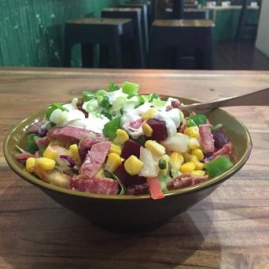
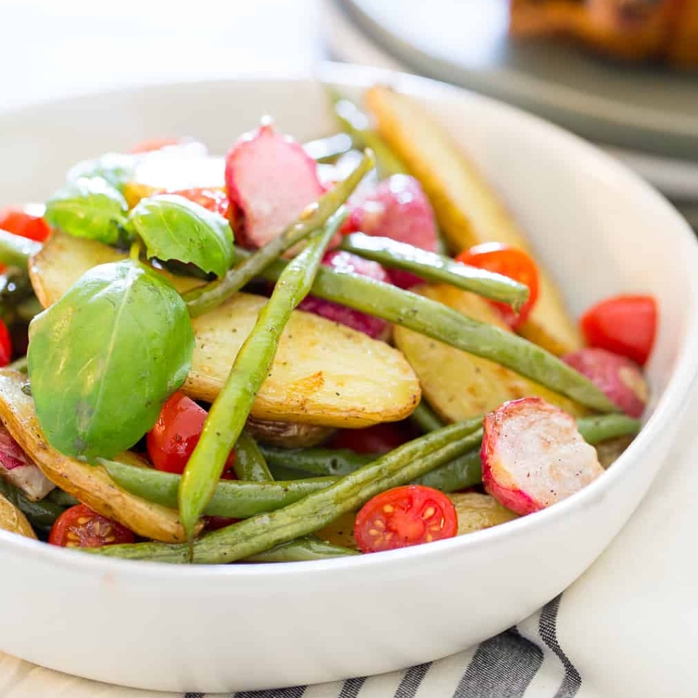

The Green Jacket is a healthy and satisfying alternative to an everyday salad. The name is simple, Green meaning healthy, fresh, and light and Jacket representing the main ingredient the beloved potato.
Taking inspiration from the many salad bars currently in the market and combining this with the British love of a jacket potato, we think we have found the perfect combination for those who want to think naughty but eat nice.
Our mission is to provide healthy and tasty lunchtime meals for busy Londoners, however we are hoping to stop our customers from searching for the treats mid afternoon, we like to think we are bringing substance to a salad.
Most people are aware of the quote you dont make friends with salad, here at The Green Jacket we think this needs to be changed, we are making good food better, and changing the way a jacket potato is viewed.